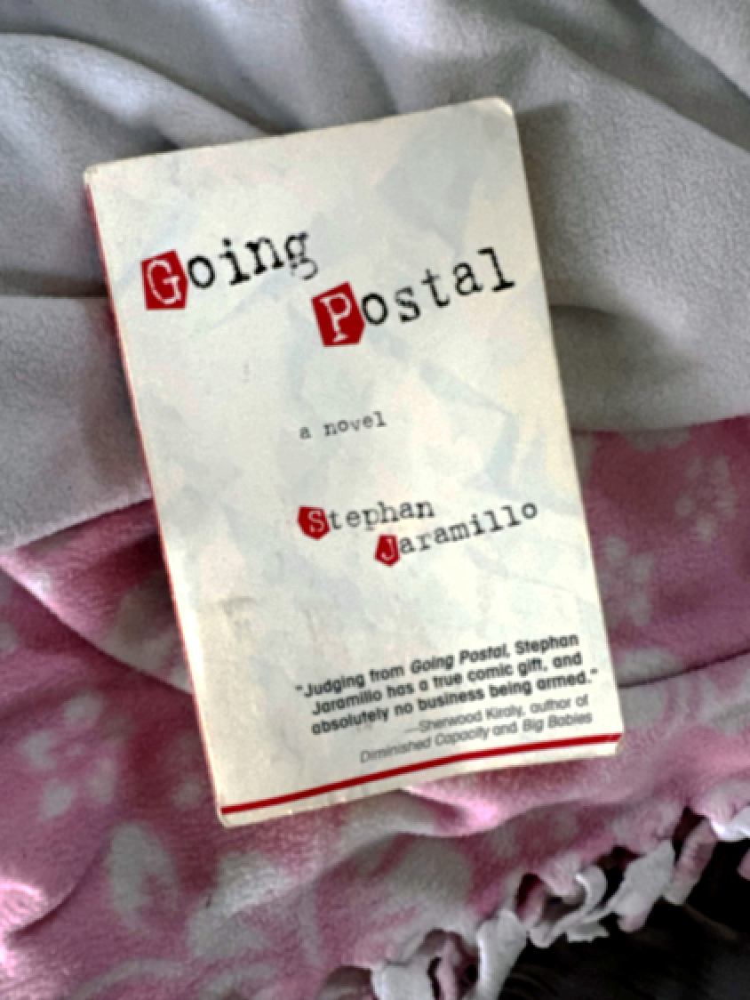
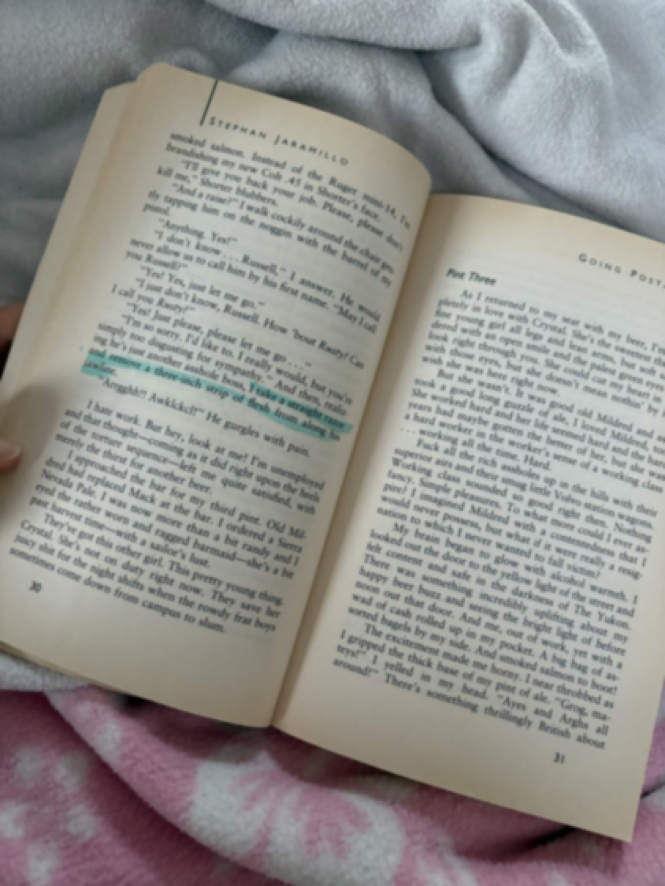
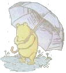

Newest First:
Going on blog hiatus
Dec. 10, 2007
Hi all, I haven't been doing too great recently. Work is always stressful but I'm finding I just don't have many good things to post or talk about, I don't want it to feel like a chore to upkeep something personal to me that's supposed to be lighthearted. I just wanted everyone to know I'm okay and I'll be in touch privately.
Comments:
PannaPie02 |
[Dec. 10, 2007] |
That's such a shame! I always look forward to your little posts. i;ll shoot you a call when I have some free time okay?
 |
Odele |
[Dec. 10, 2007] |
Thank you, I really appreciate it. Talk soon
coolocean221 |
[Dec. 10, 2007] |
maybe a girls night will cheer you up, I can call Beth and Lia and see what they're up to
coolocean221 |
[Dec. 10, 2007] |
Okay Lia is busy but we should go see a movie at least
|
Odele |
[Dec. 10, 2007] |
Sure just phone me
IslandGirl8 |
[Dec. 11, 2007] |
Noooo oh my goodness
 |
Xtonish |
[Mar. 3, 2008] |
Hey.
|
Xtonish |
[Mar. 3, 2008] |
Hey
|
Xtonish |
[Mar. 3, 2008] |
HEY
|
Xtonish |
[Mar. 3, 2008] |
fucking reply
|
Xtonish |
[Mar. 3, 2008] |
i saw you active
This post has been deleted.
Are you the original poster? Login to restore.Going Postal review and thoughts
Nov. 31, 2007
Jeanna lent me Going postal last summer and I only took it upon myself to finish it now..


But I quite liked it, I think Steve is relatable in all his scumbag garbageness. I think his character speaks to the real feelings have. Of course you lose your job, lose people in your lfie, you get sad, but its hard for the real grime of it to be captured.
At first I thought it was a more intense kind of story, but it's a pretty introspective 'everyday life' kind of story which I found really pleasant.
But what I really like is this notion of going postal.
Like this feeling of: "Am I next?" when you feel yourself ready to snap. I like how easily like water it comes to Steve, less that I like that trait in him but I get it. He's got a Colt .45 and a tight mind, and it's like the only thing holding him back is himself.
Comments:
PannaPie02 |
[Dec. 1, 2007] |
One of the ladies in my book club had a lot to say about it for sure.
|
Xtonish |
[Mar. 3, 2008] |
goooooo fucking figure
Movie Recommendations
Nov. 29, 2007
I feel like I'm bad at picking movies, I went to the DVD store and I came out empty-handed...
I feel like someone else has to sell it to me, like I get more interested if someone is telling me about it rather than reading a description on the back. What are some of your guys' favorite movies?
Side note: I asked my mom for a recommendation and she gave me a VHS tape... like what??!
Comments:
IslandGirl8 |
[Nov. 30, 2007] |
htats so funny
IslandGirl8 |
[Nov. 30, 2007] |
you should watch just married
Duckinatree |
[Nov. 30, 2007] |
ETERNAL SUNSHINE WAS SO GOOD ill actually get you a ticket
5 reasons to like rainy days
Nov. 18, 2007
A CERTAIN someone has been insisting they hate rain to me...
So I've come up with: Five reasons to love a rainy day!
1: The sounds on the roof
When you're home and it's cold and rainy outside, the sound of the drops pelting on your rooftop just has kind of a pleasant rhythm to it. I swear I'm more productive.2: The smell after
It just smells so good and fresh and earthy outside. I always go for a walk once the rain clears (or when its still out.. but thats for number #3) There's actually a bacteria called geosmin that is responsible.3:Umbrellas
Isn't it so nice to see everyone with their umbrellas out? It just looks proper and satisfying to me, everyone huddled together under patterns and colors. We're like polka dots.Things get canceled!
WHen i was still in school for nursing, it was like a lifesaver to have a rough class canceled to have more time to study. Or even to have a date you wren't looking forward to canceled, fahaha!Reason 5.....
I'm out of reasons to be honest.. but 5 is a nicer number. I just love the rain so much and the way it feels, I can only justify it so much with reasons but I just need to express it.Raining on every parade out here..

A fun fact to end the post: when it rains while the sun out, it's called "The devil beating his wife" *o*
Comments:
coolocean221 |
[Nov. 18, 2007] |
nice List!
The world beyond the sun
Jul. 7, 2007
It's really hot today. On days like these as a kid I used to lay in the grass and shade in this big tree behind my house, and
I would imagine this world I called 'The world beyond the sun'. I imagined that a beam of sun would come down like a bridge of light
and I would walk accross, and it would be hard like tile. The sun would get bigger and hotter the closer you got, then you'd see the stars and planets in space as you get closer.
On the backside of where you see the sun from Earth I imagined there were a bunch of buildings. There was a hotel of other kids, but
they were sun kids who were made from the sun's core. The hotel had a buffet with all my favorite foods and popsicles or ice cream
for when it was too hot.
I would add places each time I laid outside, there was a "cold springs" as opposed to a hot springs, these pits of ice hidden in a cave
One time I thought of a fire resistant treehouse. The other sun kids and I kept stacking rooms on top of it to reach outer space, then
we collected rocks from saturn's rings and turned them into bracelets. I had a kind of fascination with space as a kid, but it never went too far. I think I just liked to think of the other worlds that could exist
Comments:
No comments yet.
This post has been deleted.
Are you the original poster? Login to restore.This post has been deleted.
Are you the original poster? Login to restore.Merry Christmas Everyone!
Dec. 25, 2006
Or happy holidays / Happy new year!!
I'm glad to have a time of year we can all see each other that's so festive.
I hope you guys liked what I got you this year, I thought about my gifts really really hard this year!! Here's to another good one
Comments:
coolocean221 |
[Dec. 25, 2007] |
MERRY CHRISTMAS ODELE!! I'm glad you liked the mitts
coolocean221 |
[Dec. 25, 2007] |
Could you send the pictures you took pretty please :]
|
Odele |
[Dec. 25, 2007] |
Sure, I'll email them to you
PannaPie02 |
[Dec. 25, 2007] |
Merry Christmas!! The card was very lovely
|
Odele |
[Dec. 25, 2007] |
Happy you liekd it!
IslandGirl8 |
[Dec. 27, 2007] |
I ate so muchh lets share a resolution to lose some weight togehter
WRYBORG777 |
[Dec. 27, 2007] |
MERRYYYYY LATEE CHRISTMAS
|
Odele |
[Dec. 27, 2007] |
Lateee christmass!! Hope you and James had a good one
Duckinatree |
[Dec. 29, 2007] |
Hey I'm in town! lets go bar hopping or something, get messed up this new years!!
|
Odele |
[Dec. 29, 2007] |
Unfortunately I don't think I can, I'm working the 31st.. we can still go out tho I just can't push it too hard
Duckinatree |
[Dec. 29, 2007] |
That's no fun X-X i'm still down to go
|
Odele |
[Dec. 29, 2007] |
Yeah haha ER is not kind to me